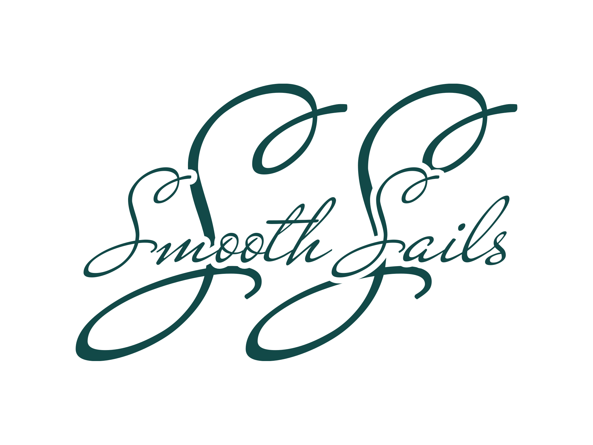

Overview
Purpose
At Smooth Sails, our purpose is to empower individuals to achieve their educational, exciting, and financial goals while exploring the exhilarating world of white water rafting. We are committed to serving as your ultimate resource for white water adventures, providing not only thrilling experiences but also valuable insights that can enrich your life. Through informative content, engaging experiences, and opportunities for financial empowerment, we aim to foster a community of adventure enthusiasts who can turn their passion for white water rafting into both an educational journey and a rewarding financial endeavor. Join us as we navigate the rapids of adventure, learning, and financial growth, helping you ride the waves of life with confidence and excitement."
Audience
My audience would include the following categories of people as listed below and they mostly would be between the ages of 12-60yrs in age: Adventure Enthusiasts: These individuals are seeking thrilling outdoor experiences. They may have a love for adrenaline-pumping activities and are interested in exploring new challenges like white water rafting. Tourists and Travelers: People who are planning vacations or trips to regions known for white water rafting, looking for information on available rafting experiences, safety tips, and recommendations. Families and Groups: Families, friends, and corporate groups looking for group adventure activities or team-building experiences often consider white water rafting.
Beginners: Individuals who are new to white water rafting and are looking for guidance, tips, and information on how to get started in this exciting sport. Experienced Rafters: Seasoned white water rafters seeking detailed information about challenging river routes, advanced techniques, and equipment reviews. Educators and Schools: Teachers, outdoor education programs, and schools interested in using white water rafting as an educational tool or field trip opportunity. Outdoor and Adventure Bloggers: Other bloggers or content creators who want to share their experiences and knowledge related to white water rafting. Local and International Tour Operators: Businesses in the adventure tourism industry seeking partnerships, advertising opportunities, or resources to enhance their services. Financially Savvy Individuals: Those who are interested in leveraging their passion for white water rafting as a source of income, seeking information on how to turn their love for the sport into a business opportunity.
Branding
Website Logo
Style Guide
Color Palette
Palette URL:
https://coolors.co/124948-fe7f2d-a1c181-619b8a| Primary | Secondary | Accent 1 | Accent 2 |
|---|---|---|---|
| [#fe7f2d] | [#124948] | [#a1c181] | [#619b8a] |
Typography
Heading Font: [Playfair Display]
Paragraph Font: [Oswald]
Normal paragraph example
The best Whitewater Rafting in Colorado, White Water Rafting Company offers rafting on the Colorado and Roaring Fork Rivers in Glenwood Springs. Since 1974, we have been family owned and operated, rafting the Shoshone section of Glenwood Canyon and beyond.
Colored paragraph example
Trips vary from mild and great for families, to trips exclusively for physically fit and experienced rafters. No matter what type of river adventures you are seeking, White Water Rafting Company can make it happen for you.
Navigation
Site Map
Wireframes
Home